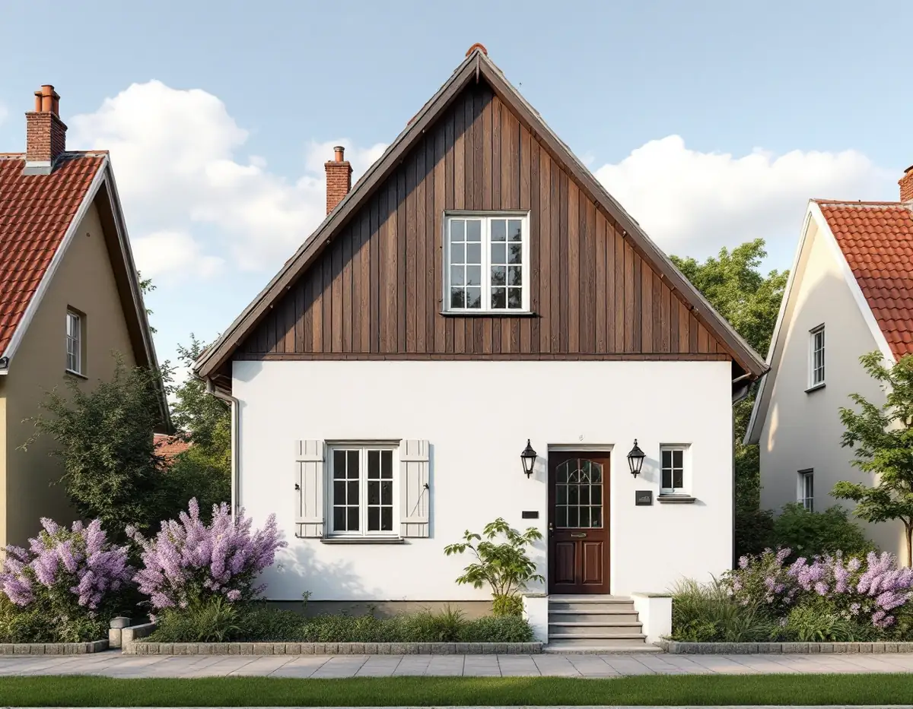
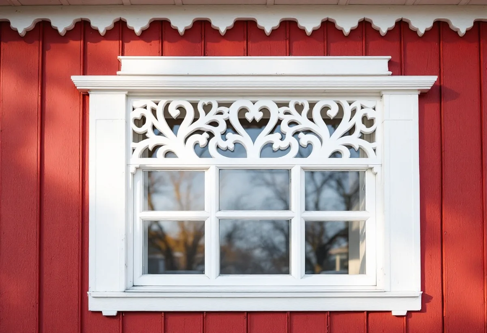

Platsbesök
Vi tittar på panel, puts, luckor och verandor och gör skrapprov för att se färgtyp och äldre kulörer.
När AB Hem på landet sålde tomterna i Älvsjö villastad stod det i köpekontrakten att husets yttre färgton skulle godkännas av bolaget. Det är en del av förklaringen till att villastaden fortfarande hänger ihop. Geal Entreprenad AB målar ute och inne i Älvsjö, Långbro, Herrängen, Solberga och Örby, med gratis platsbesök och skriftligt kostnadsförslag.

Stadsmuseets förortsinventering av Älvsjö villastad, beskriven av Suzanne Lindhagen, visar hur området byggdes ut efter 1908. Bolaget ställde krav i kontrakten: tomterna fick inte styckas, varje tomt skulle bebyggas inom två år med en enda byggnad efter en ritning som bolaget godkänt, och färgtonen skulle godkännas för att undvika färger som inte harmonierade med grannhusen.
Inventeringen beskriver två vanliga hustyper. Den ena hade vit slätputsad bottenvåning, gavelspetsar klädda med mörkbrunmålad panel på förvandring och småspröjsade fönster med luckor. Den andra hade falurödfärgad träpanel och vitmålade snickerier, ibland med utsågade hjärtan som dekor. Båda fanns kvar i nästan ursprungligt skick när museet gjorde sin genomgång.
Samma text konstaterar att många hus från 1910- och 20-talen hade byggts om eller till i flera omgångar, och att nya fasad- och takmaterial, nya färgtyper och tilläggsisolering hade bidragit till att husens ursprungliga karaktär gått mer eller mindre förlorad.

Stadens vägledning Varsam utveckling av småhus- och villaområden räknar delar av Långbro och Herrängen, Liseberg, Örby, Långsjö och delar av Älvsjö till typen villastad. Villastäderna var privat organiserade och fick en brokigare bebyggelse än stadens egnahemsområden. Trä var det dominerande fasadmaterialet, även om puts förekom, och glasverandor, takkupor, snickarglädje och färgsättning gav stadsdelarna en variation som fortfarande syns.
Vägledningen ger samma råd för alla villastäder: ta tillvara eller återskapa karaktärsskapande material, kulörer, byggnadsdelar och detaljer så långt det går vid ombyggnader och renoveringar. Material och färgsättning räknas dessutom till de aspekter som har stor påverkan på områdets karaktär.
Andra delar av Långbro och Herrängen byggdes som småstugeområden. Där är husen typritade, uteslutande i trä med fönster i fasadliv och stående lockläktpanel, och kulörerna hölls från början till ett fåtal ljusa. På sådana hus är det snarare enhetligheten med grannhusen än det individuella uttrycket som ska bevaras.
Stockholms stad skriver att det inte längre krävs bygglov för fasadändringar på en- eller tvåbostadshus om vissa förutsättningar är uppfyllda. Utökad lovplikt gäller bland annat om huset är en särskilt kulturhistoriskt värdefull byggnad eller ligger i ett särskilt kulturhistoriskt värdefullt område, och Stadsmuseets klassificeringskarta ger en första indikation. Byte av kulör räknas uttryckligen som en fasadändring.
En fasadändring som inte kräver lov ska ändå stämma överens med detaljplanen, och detaljplanen kan innehålla bestämmelser som skyddar en byggnad eller kräver lov även när lagen inte gör det. Planen för din fastighet hittar du i stadens e-tjänst Bygg- och plantjänsten.
Vill du veta mer om ditt område går det att beställa stadens äldre miljöprogram och typritningssamlingar. De har ingen juridisk status vid bygglovsprövningen, men staden beskriver dem som ett bra underlag för att förstå områdets karaktär. Mer om husen och taken i stadsdelen finns under takrenovering i Älvsjö.
Det är snickerierna som slits först. Riksantikvarieämbetet skriver att ommålning behöver göras oftare på utsatta delar som fönstersnickerier, vindskivor och sydfasader, och att mild rengöring och bättring av skadade partier är ett utmärkt sätt att förlänga livslängden på oljefärg som i övrigt är intakt. En rätt sammansatt linoljefärg har enligt handboken en livslängd på cirka 15–20 år.
Fönsterluckor, dekorbrädor med utsågade hjärtan och verandornas spröjs målas bäst nedtagna eller i lugn takt på plats: skrapning, lagning av trä, grundning, mellanstrykning och slutstrykning. Linoljefärg är övermålningsbar efter ungefär ett till tre dygn i varmt och torrt väder, och för långa uppehåll mellan strykningarna bör undvikas.
Den vita slätputsen i bottenvåningen kräver en annan färg än panelen ovanför. Handboken skriver att kalkfärg fäster bra på kalkputs men dåligt på cementrika underlag, så vi tar reda på vad putsen består av innan färgen väljs. Ska taket ses över samtidigt, läs om takläggare i Älvsjö.
Vi tittar på panel, puts, luckor och verandor och gör skrapprov för att se färgtyp och äldre kulörer.
Klassningen i Stadsmuseets karta och detaljplanen kontrolleras innan en ny kulör beställs.
Fasad, snickerier och fönster redovisas för sig, med färgtyp, kulör och antal strykningar.
Tvätt, skrapning, lagning av trä och puts och kittning av fönster.
Puts och panel målas med var sin lämplig färg, i lämpligt väder.
Vi går igenom resultatet tillsammans och bättrar där det behövs.
I en villa eller ett radhus med äganderätt räknar Skatteverket fasadmålning, fönstermålning och invändig målning som rotarbete, liksom rengöring av fasader. Att måla staket och murar ger inget avdrag. Avdraget är 30 procent av arbetskostnaden, högst 50 000 kr per person och år, och tillsammans med rutavdrag högst 75 000 kr.
Färgen räknas som material och ger inget avdrag. Geal drar avdraget direkt på fakturan.
I Älvsjö styrs kostnaden ofta mer av snickerierna än av fasadytan: antalet fönster med spröjs och luckor, glasverandor, dekorbrädor och vindskivor. Hus som byggts till i flera omgångar kan ha olika underlag på olika delar. Platsbesöket är gratis och du får ett skriftligt kostnadsförslag.
Fasad, fönster och invändig målning.
Målare i Stockholm →Takbyte, takbesiktning och plåtarbeten.
Takläggare i Älvsjö →Långbro, Herrängen och Långsjö.
Takrenovering i Älvsjö →Villastad, flerlägenhetsvillor och kök i lager.
Köksrenovering i Älvsjö →